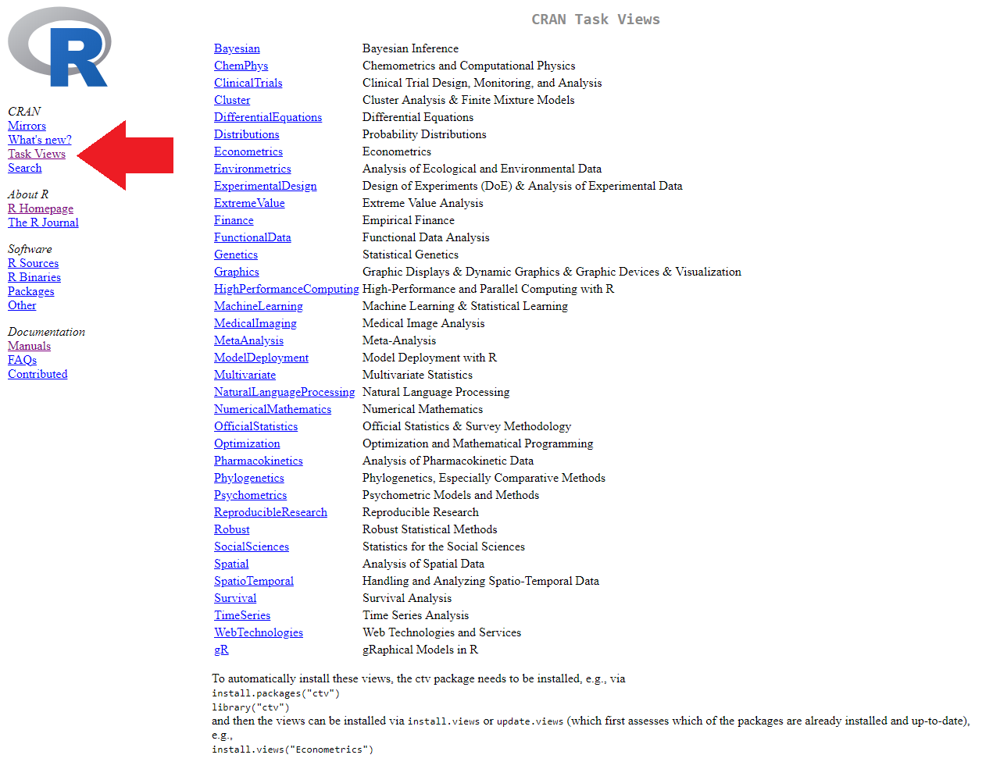

R Workshop: Module 6 (2)
Bobae Kang
April 25, 2018

This page contains the notes for the second part of R Workshop Module 6: “To Infinity and Beyond”, which is part of the R Workshop series prepared by ICJIA Research Analyst Bobae Kang to enable and encourage ICJIA researchers to take advantage of R, a statistical programming language that is one of the most powerful modern research tools.
Links
Click here to go to the workshop home page.
Click here to go to the workshop Modules page.
Click here to view the accompanying slides for Module 6, Part 2.
Navigate to the other workshop materials:
“To Infinity and Beyond” (2): Leveraging online resources
Why online resources?
- We cannot know everything.
- In fact, no one knows everything!
- “Someone has already done it.”

Source: AZ Quotes
Before going online
Source: Wikimedia Commons
“The 15 minute rule”
- First, try yourself. If you cannot solve it, then go online.
15 min rule: when stuck, you HAVE to try on your own for 15 min; after 15 min, you HAVE to ask for help.- Brain AMA pic.twitter.com/MS7FnjXoGH
— Rachel Thomas (@math_rachel) August 14, 2016
“Oops, my bad”
- We all make typos. Check for typos!
- RStudio does not check for typos automatically
- But we can refer to an error caused by the typos
- Check if a package is loaded before using its functions
Error in some_function() : could not find function "some_function"
Help function
# these are equivalent
?some_function
help(some_function)- Looking ino the documentation is often the best way to understand what a function is and how to use it.
- Using the
?followed by the function name orhelp()brings out the documentation if available
Error messages and debugging
- When an error is thrown, it comes with an error message
- Error messages often have rich information about what went wrong and where it went wrong
- If we are working with custom functions we defined, RStudio’s debugging tools can help us to spot the source of an error in the script and debug it
- See this article on debugging with RStudio
- See this video by RStudio on introduction to debugging

Source: Google.com
How to google for questions
- Be succinct and specific
- The search term should be a set of keywords
- Package names and/or function names are good keywords
- Using the relevant error message as a serach term can help
- Look at questions/answers on platforms like:
- Stack Overflow
- Quora
- Refer to “official” resources if available
“Official” resources

Source: R Project
CRAN website
- The Comprehensive R Archive Network (CRAN) has many resources for R and R packages, including the following
- Manuals
- Task Views
- Package pages
Manuals
- CRAN offers the following manuals:

Task Views
- A Task View offers a brief introduction to a particular topic and an annotated list of relevant R packages
- CRAN has tasks views on a selection of topics, including:

Package pages
- Each contributed package that is listed on CRAN has a page
- A reference manual and vignettes can be found on the CRAN package page
- To directly get to the package page, try on your broswer:
- “https://cran.project.org/package=[package-name]”
- Replace [package-name] with any existing package name

CRAN package page example (dplyr)**

Pacakge reference manuals
- Packages have reference manuals that contain documentation for all its contents (i.e. functions and datasets)
- Basically, it is a collection of
help()documentations in a pdf format
- Basically, it is a collection of
- Reference manual can also be found by googling
- Try “package-name pdf” as your search term
Pacakge vignettes
- Packages often have vignettes to introduce its contents
- Some vignettes can be accessed via
vignette("package")on console - Other vignettes are found on the pacakge page on CRAN
- Some vignettes can be accessed via
- Unfortunately, not all packages have vignettes.
RStudio website
- RStudio’s website offer many useful resources under “Resources” menu, including the following:
- Cheet sheets page has download links to over 30 “cheat sheets” on R and R packages in the PDF format.
- Webinar & videos page
Cheet sheets
- Currently, 13 RStudio cheat sheets are available, including:
- “Data Transformation with dplyr”
- “Data Import”
- “Data Visualization with ggplot2”
- “Date and times with lubridate”
- “Work with strings with stringr”
- Currently, there are 15 user-made cheat sheats as well
- Some cheat sheats can also be found in RStudio IDE menu
- “Help > Cheatsheets”


Webinar & videos
- RStudio’s webinars and videos offer materials covering a variety of subjects.
- Some materials are organized by topics, including:
- “RStudio Essentials”
- “Shiny Essentials” and “Advanced Shiny”
- Some videos here are also available via Shiny website
- “The Essentials of Data Science”
- “Advanced Data Science”
- Materials from RStudio’s annual conference,
rstudio::conf, are also made available.

Tidyverse website
- Tidyverse has its own website to
- introduce tidyverse packages
- share updates and news on tidyverse, and
- offer guides to training matarials
- There are also child websites for many of tidyverse packages
- URL: “[package-name].tidyverse.org”

Tidyverse child websites
| Pacakge | Description | URL |
|---|---|---|
ggplot2 |
For data visualization | http://ggplot2.tidyverse.org/ |
dplyr |
For data manpulation | http://dplyr.tidyverse.org/ |
tidyr |
For tidying up data | http://tidyr.tidyverse.org/ |
readr |
For data implort/export | http://readr.tidyverse.org/ |
purrr |
For better loops | http://purrr.tidyverse.org/ |
tibble |
For extending data.frame |
http://tibble.tidyverse.org/ |
stringr |
For working with strings | http://stringr.tidyverse.org/ |
forcats |
For working with factors | http://forcats.tidyverse.org/ |
readxl |
For importing Excel files | http://readxl.tidyverse.org/ |
haven |
For SPSS, SAS, and Stata data | http://haven.tidyverse.org/ |
lubridate |
For working with datetimes | http://lubridate.tidyverse.org/ |
| `magrittr | For specialized pipe oprators | http://magrittr.tidyverse.org/ |
R Markdown website
- RStudio has a separate website focused on all things R Markdown.
- Articles page offers a number of tutorials on creating various sorts of R Markdown documents
- Formats page provides links to reference matarials on various R Markdown formats and templates

Shiny website
- RStudio also has a separate website on everything Shiny
- Video & wrttien tutorial page has links to tutorial videos and articles on Shiny as well as recorded conference presentations and webinars
- Articles page offers a list of web articles on building Shiny applications
- Reference page contains links to upgrade notes and function references for lastest as well as previous versions of the Shiny package

htmlwidgets website
htmlwidgetsfor R website presents brief descriptions and examples for various packages for incorporating interactive widgets into R ecosystem- Currently ~100 widgets are registered
- See its “Gallery” page
- Popular
htmlwidgetspackagees include:plotlyandhighcharterfor interactive visualizationsleafletfor interactive mapsDTfor interactive data tables
- Currently ~100 widgets are registered

R Community

Source: “Community (TV series)”, Wikipedia
R-bloggers
- R-bloggers is a blog that collects and features articles and blog posts on R and programming in R from a variety of sources.
- The blog offers an excellent way to stay up-to-date on new packages and developments in the R community.
- Its posts cover new updates in R and major R packages, tutorials, information on upcoming events and conferences, and much more.

Online “books”
- Healy, K. (2018). Data Visualization: A practical introduction.
- Grolemund, G. and Wickham, H. (2017). R for Data Science.
- Lovelace, R. et al. (2018). Geocomputation in R.
- Wickham, H. (2017). Advanced R.
- Wilke, C. (n.d.). Fundamentals of Data Visualization.
Visit the bookdown package website to find many more free online books on R!

{kind=link}
Helpful websites
- Kabacoff, R. Quick-R.
- Prahbhakaran, S. r-statistics.co.
- U of Cincinnati. UC Business Analytics R Programming Guide.
- Wollschlaeger, D. R Examples Repository.
- Yau, C. R Tutorial.
And, of course, this workshop’s website :)
GitHub repositories

Source: GitHub
What is GitHub?
“GitHub is a development platform inspired by the way you work. From open source to business, you can host and review code, manage projects, and build software alongside millions of other developers.” - GitHub.com
- Most R packages are available as GitHub repositories, which can be “cloned” and downloaded if wanted.
- Many R package authors offer brief explanations and even quick tutorials for their packages on the GitHub repositories.
Github repository example (dplyr)


Online courses

Source: worldview.stanford.edu
Datacamp
- Requires registration and log-in
- Some free courses are available, but most are paid courses with one free chapter
- Cost is $25/month with the annual plan or $29/month
- Onces subscribed, all courses become available
- Offers 70+ courses on R
- Each course is short (~4 hours) and focused on a specific topic
- Ranging from basic to intermediate level
Coursera
- Requires registration and log-in
- Offers courses, specializations and online degrees
- Find out more about different options here
- You can “audit” a course for free
- Course Certificate and online support are available for a fee ($29-$99)
- Notable contents
- Data Science Specialization (10 courses)
- Statistics with R Specialization (5 courses)
edX
- Requires registration and log-in
- Courses are free and mostly self-paced
- edX offer verified certificate for individual courses and XSeries certificate for XSeries programs for a small fee
- Courses are usually organized in a college-course like format
- Perhaps better for learning basics on topics like:
- Computer science and programming
- Probability and statistics
References
- Soltoff, B. (n.d.). Computing for Social Sciences